Contains classes that represent the collision models available in MEASURE, and methods for calculating various collision parameters. Each collision model provides a method generateCollisionMatrix() that generates the collision matrix 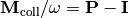 corresponding to the collisional energy transfer probability function 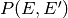 for that model. The available collision models are:
A base class for collision models. To create a custom collision model, derive from this class and implement the generateCollisionMatrix() method, which returns the collision matrix for the collision model you are implementing.
Note
As with all collision models, you can only specify either the deactivating direction or the activating direction of the collisional transfer probabilities function , as the other is constrained by detailed balance.
Refactoring of collision and reaction modules to full Cython syntax. A single exponential down collision model, based around the collisional energy transfer probability function
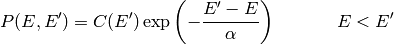
where the parameter 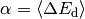 represents the average energy transferred in a deactivating collision. This is the most commonly-used collision model, simply because it only has one parameter to determine. The parameter 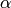 is specified using the equation
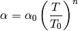
where 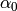 is the value of at temperature 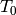 in K. Set the exponent 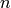 to zero to obtain a temperature-independent value for .
| Attribute | Type | Description |
|---|---|---|
| alpha | double | The average energy transferred in a deactivating collision in J/mol |
Generate and return the collision matrix corresponding to this collision model for a given set of energies Elist in J/mol, temperature T in K, and isomer density of states densStates.
Return the value of the parameter at temperature T in K. The parameter represents the average energy transferred in a deactivating collision 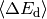, and has units of J/mol.
Calculate the Lennard-Jones collision frequency for a given species with
a dictionary of bath gases and their mole fractions bathGas at a given
temperature T in K and pressure P in Pa. The Lennard-Jones model is
generally a slight underestimate, but reasonable enough. If the bath gas
is a mixture, arithmetic means are used to compute its effective
Lennard-Jones  parameter and molecular weight, while a
geometric mean is used to calculate its effective Lennard-Jones
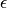 parameter.
parameter and molecular weight, while a
geometric mean is used to calculate its effective Lennard-Jones
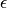 parameter.
Calculate an efficiency factor for collisions, particularly useful for the modified strong collision method. The collisions involve the given species with density of states densStates in mol/J corresponding to energies Elist in J/mol, ground-state energy E0 in J/mol, and first reactive energy Ereac in J/mol. The collisions occur at temperature T in K and are described by the collision model collisionModel, which currently must be a SingleExponentialDownModel object. The algorithm here is implemented as described by Chang, Bozzelli, and Dean [Chang2000].
| [Chang2000] | A. Y. Chang, J. W. Bozzelli, and A. M. Dean. Z. Phys. Chem. 214, p. 1533-1568 (2000). doi: 10.1524/zpch.2000.214.11.1533 |